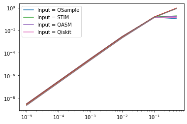
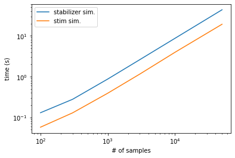

import qsample as qs
import qiskit
import time
import stim
import numpy as np
import matplotlib.pyplot as plt
import time
import re
from tqdm.notebook import tqdm
import randomInput = STIM
eft = qs.Circuit(noisy=True)
sz_123 = qs.Circuit(noisy=True)
meas7 = qs.Circuit(noisy=False)
eft.from_stim_circuit("""R 0 1 2 3 4 5 6 7
H 0 1 3
CNOT 0 4
CNOT 1 2
TICK
CNOT 3 5
TICK
CNOT 0 6
TICK
CNOT 3 4
TICK
CNOT 1 5
TICK
CNOT 0 2
TICK
CNOT 5 6
TICK
CNOT 4 7
TICK
CNOT 2 7
TICK
CNOT 5 7
M 7""")
sz_123.from_stim_circuit("""R 8
CNOT 0 8
TICK
CNOT 1 8
TICK
CNOT 3 8
TICK
CNOT 6 8
M 8""")
meas7.from_stim_circuit("""M 0 1 2 3 4 5 6""")
k1 = 0b0001111
k2 = 0b1010101
k3 = 0b0110011
k12 = k1 ^ k2
k23 = k2 ^ k3
k13 = k1 ^ k3
k123 = k12 ^ k3
stabilizerGenerators = [k1, k2, k3]
stabilizerSet = [0, k1, k2, k3, k12, k23, k13, k123]
def hamming2(x, y):
count, z = 0, x ^ y
while z:
count += 1
z &= z - 1
return count
fails = []
def logErr(out):
global fails
c = np.array([hamming2(out, i) for i in stabilizerSet])
d = np.flatnonzero(c <= 1)
e = np.array([hamming2(out ^ (0b1111111), i) for i in stabilizerSet])
f = np.flatnonzero(e <= 1)
if len(d) != 0:
return False
elif len(f) != 0:
fails.append(out)
return True
if len(d) != 0 and len(f) != 0:
raise('-!-!-CANNOT BE TRUE-!-!-')
def flagged_z_look_up_table_1(z):
s = [z]
if s == [1]:
return True
else:
return False
functions = {"logErr": logErr, "lut": flagged_z_look_up_table_1}
steane0 = qs.Protocol(check_functions=functions, fault_tolerant=True)
steane0.add_nodes_from(['ENC', 'Z2', 'meas'], circuits=[eft, sz_123, meas7])
steane0.add_node('X_COR', circuit=qs.Circuit(noisy=True).from_stim_circuit("""X 6"""))
steane0.add_edge('START', 'ENC', check='True')
steane0.add_edge('ENC', 'meas', check='ENC[-1]==0')
steane0.add_edge('ENC', 'Z2', check='ENC[-1]==1')
steane0.add_edge('Z2', 'X_COR', check='lut(Z2[-1])')
steane0.add_edge('Z2', 'meas', check='not lut(Z2[-1])')
steane0.add_edge('X_COR', 'meas', check='True')
steane0.add_edge('meas', 'FAIL', check='logErr(meas[-1])')err_model = qs.noise.E1
q = [1e-5, 1e-4, 1e-3, 1e-2, 1e-1, 0.5]
err_params = {'q': q}
begin = time.time()
stim_sam = qs.SubsetSampler(protocol=steane0, simulator=qs.StimSimulator, p_max={'q': 0.1}, err_model=err_model, err_params=err_params, L=3)
stim_sam.run(2000)
end = time.time()
stim_time = end-begin
v2 = stim_sam.stats()[0]
w2 = stim_sam.stats()[2]Input = qsample
eft = qs.Circuit([ {"init": {0,1,2,4,3,5,6,7}},
{"H": {0,1,3}},
{"CNOT": {(0,4)}},
{"CNOT": {(1,2)}},
{"CNOT": {(3,5)}},
{"CNOT": {(0,6)}},
{"CNOT": {(3,4)}},
{"CNOT": {(1,5)}},
{"CNOT": {(0,2)}},
{"CNOT": {(5,6)}},
{"CNOT": {(4,7)}},
{"CNOT": {(2,7)}},
{"CNOT": {(5,7)}},
{"measure": {7}} ])
sz_123 = qs.Circuit([ {"init": {8}},
{"CNOT": {(0,8)}},
{"CNOT": {(1,8)}},
{"CNOT": {(3,8)}},
{"CNOT": {(6,8)}},
{"measure": {8}}])
meas7 = qs.Circuit([ {"measure": {0,1,2,3,4,5,6}} ], noisy=False)
k1 = 0b0001111
k2 = 0b1010101
k3 = 0b0110011
k12 = k1 ^ k2
k23 = k2 ^ k3
k13 = k1 ^ k3
k123 = k12 ^ k3
stabilizerGenerators = [k1, k2, k3]
stabilizerSet = [0, k1, k2, k3, k12, k23, k13, k123]
def hamming2(x, y):
count, z = 0, x ^ y
while z:
count += 1
z &= z - 1
return count
fails = []
def logErr(out):
global fails
c = np.array([hamming2(out, i) for i in stabilizerSet])
d = np.flatnonzero(c <= 1)
e = np.array([hamming2(out ^ (0b1111111), i) for i in stabilizerSet])
f = np.flatnonzero(e <= 1)
if len(d) != 0:
return False
elif len(f) != 0:
fails.append(out)
return True
if len(d) != 0 and len(f) != 0:
raise('-!-!-CANNOT BE TRUE-!-!-')
def flagged_z_look_up_table_1(z):
s = [z]
if s == [1]:
return True
else:
return False
functions = {"logErr": logErr, "lut": flagged_z_look_up_table_1}
steane0 = qs.Protocol(check_functions=functions, fault_tolerant=True)
steane0.add_nodes_from(['ENC', 'Z2', 'meas'], circuits=[eft, sz_123, meas7])
steane0.add_node('X_COR', circuit=qs.Circuit([{'X': {6}}], noisy=True))
steane0.add_edge('START', 'ENC', check='True')
steane0.add_edge('ENC', 'meas', check='ENC[-1]==0')
steane0.add_edge('ENC', 'Z2', check='ENC[-1]==1')
steane0.add_edge('Z2', 'X_COR', check='lut(Z2[-1])')
steane0.add_edge('Z2', 'meas', check='not lut(Z2[-1])')
steane0.add_edge('X_COR', 'meas', check='True')
steane0.add_edge('meas', 'FAIL', check='logErr(meas[-1])')err_model = qs.noise.E1
q = [1e-5, 1e-4, 1e-3, 1e-2, 1e-1, 0.5]
err_params = {'q': q}
begin = time.time()
ss_sam = qs.SubsetSampler(protocol=steane0, simulator=qs.StabilizerSimulator, p_max={'q': 0.1}, err_model=err_model, err_params=err_params, L=3)
ss_sam.run(2000)
end = time.time()
qsample_time = end-begin
v1 = ss_sam.stats()[0]
w1 = ss_sam.stats()[2]Input = QASM
eft = qs.Circuit().from_qasm_circuit("""OPENQASM 2.0;
include "qelib1.inc";
qreg q[8];
creg c[1];
h q[0];
h q[1];
h q[3];
cx q[0], q[4];
cx q[1], q[2];
cx q[3], q[5];
cx q[0], q[6];
cx q[3], q[4];
cx q[1], q[5];
cx q[0], q[2];
cx q[5], q[6];
cx q[4], q[7];
cx q[2], q[7];
cx q[5], q[7];
measure q[7] -> c[0];""")
sz_123 = qs.Circuit().from_qasm_circuit("""OPENQASM 2.0;
include "qelib1.inc";
qreg q[9];
creg c[1];
// Initialize qubit 8 (default is |0⟩)
// Apply CNOT gates with control qubits 0,1,3,6 and target qubit 8
cx q[0], q[8];
cx q[1], q[8];
cx q[3], q[8];
cx q[6], q[8];
// Measure qubit 8 into classical bit 0
measure q[8] -> c[0];""")
meas7 = qs.Circuit(noisy=False).from_qasm_circuit("""OPENQASM 2.0;
include "qelib1.inc";
qreg q[7];
creg c[7];
measure q[0] -> c[0];
measure q[1] -> c[1];
measure q[2] -> c[2];
measure q[3] -> c[3];
measure q[4] -> c[4];
measure q[5] -> c[5];
measure q[6] -> c[6];""")
k1 = 0b0001111
k2 = 0b1010101
k3 = 0b0110011
k12 = k1 ^ k2
k23 = k2 ^ k3
k13 = k1 ^ k3
k123 = k12 ^ k3
stabilizerGenerators = [k1, k2, k3]
stabilizerSet = [0, k1, k2, k3, k12, k23, k13, k123]
def hamming2(x, y):
count, z = 0, x ^ y
while z:
count += 1
z &= z - 1
return count
fails = []
def logErr(out):
global fails
c = np.array([hamming2(out, i) for i in stabilizerSet])
d = np.flatnonzero(c <= 1)
e = np.array([hamming2(out ^ (0b1111111), i) for i in stabilizerSet])
f = np.flatnonzero(e <= 1)
if len(d) != 0:
return False
elif len(f) != 0:
fails.append(out)
return True
if len(d) != 0 and len(f) != 0:
raise('-!-!-CANNOT BE TRUE-!-!-')
def flagged_z_look_up_table_1(z):
s = [z]
if s == [1]:
return True
else:
return False
functions = {"logErr": logErr, "lut": flagged_z_look_up_table_1}
steane0 = qs.Protocol(check_functions=functions, fault_tolerant=True)
steane0.add_nodes_from(['ENC', 'Z2', 'meas'], circuits=[eft, sz_123, meas7])
steane0.add_node('X_COR', circuit=qs.Circuit().from_qasm_circuit("""OPENQASM 2.0;
include "qelib1.inc";
qreg q[8];
x q[6];"""))
steane0.add_edge('START', 'ENC', check='True')
steane0.add_edge('ENC', 'meas', check='ENC[-1]==0')
steane0.add_edge('ENC', 'Z2', check='ENC[-1]==1')
steane0.add_edge('Z2', 'X_COR', check='lut(Z2[-1])')
steane0.add_edge('Z2', 'meas', check='not lut(Z2[-1])')
steane0.add_edge('X_COR', 'meas', check='True')
steane0.add_edge('meas', 'FAIL', check='logErr(meas[-1])')err_model = qs.noise.E1
q = [1e-5, 1e-4, 1e-3, 1e-2, 1e-1, 0.5]
err_params = {'q': q}
begin = time.time()
ss_sam = qs.SubsetSampler(protocol=steane0, simulator=qs.StimSimulator, p_max={'q': 0.1}, err_model=err_model, err_params=err_params, L=3)
ss_sam.run(2000)
end = time.time()
stim_time = end-begin
v3 = ss_sam.stats()[0]
w3 = ss_sam.stats()[2]Input = Qiskit
q = qiskit.QuantumRegister(8)
c = qiskit.ClassicalRegister(1)
eft = qiskit.QuantumCircuit(q, c)
eft.h(q[0])
eft.h(q[1])
eft.h(q[3])
eft.cx(q[0], q[4])
eft.cx(q[1], q[2])
eft.cx(q[3], q[5])
eft.cx(q[0], q[6])
eft.cx(q[3], q[4])
eft.cx(q[1], q[5])
eft.cx(q[0], q[2])
eft.cx(q[5], q[6])
eft.cx(q[4], q[7])
eft.cx(q[2], q[7])
eft.cx(q[5], q[7])
eft.measure(q[7], c[0])
eft = qs.Circuit().from_qiskit_circuit(eft)
# ==========
q = qiskit.QuantumRegister(7)
c = qiskit.ClassicalRegister(7)
meas7 = qiskit.QuantumCircuit(q, c)
meas7.measure(q[0], c[0])
meas7.measure(q[1], c[1])
meas7.measure(q[2], c[2])
meas7.measure(q[3], c[3])
meas7.measure(q[4], c[4])
meas7.measure(q[5], c[5])
meas7.measure(q[6], c[6])
meas7 = qs.Circuit().from_qiskit_circuit(meas7)
# =========
q = qiskit.QuantumRegister(9)
c = qiskit.ClassicalRegister(1)
sz_123 = qiskit.QuantumCircuit(q, c)
sz_123.cx(q[0], q[8])
sz_123.cx(q[1], q[8])
sz_123.cx(q[3], q[8])
sz_123.cx(q[6], q[8])
sz_123.measure(q[8], c[0])
sz_123 = qs.Circuit().from_qiskit_circuit(sz_123)
# ===========
k1 = 0b0001111
k2 = 0b1010101
k3 = 0b0110011
k12 = k1 ^ k2
k23 = k2 ^ k3
k13 = k1 ^ k3
k123 = k12 ^ k3
stabilizerGenerators = [k1, k2, k3]
stabilizerSet = [0, k1, k2, k3, k12, k23, k13, k123]
def hamming2(x, y):
count, z = 0, x ^ y
while z:
count += 1
z &= z - 1
return count
fails = []
def logErr(out):
global fails
c = np.array([hamming2(out, i) for i in stabilizerSet])
d = np.flatnonzero(c <= 1)
e = np.array([hamming2(out ^ (0b1111111), i) for i in stabilizerSet])
f = np.flatnonzero(e <= 1)
if len(d) != 0:
return False
elif len(f) != 0:
fails.append(out)
return True
if len(d) != 0 and len(f) != 0:
raise('-!-!-CANNOT BE TRUE-!-!-')
def flagged_z_look_up_table_1(z):
s = [z]
if s == [1]:
return True
else:
return False
functions = {"logErr": logErr, "lut": flagged_z_look_up_table_1}
steane0 = qs.Protocol(check_functions=functions, fault_tolerant=True)
steane0.add_nodes_from(['ENC', 'Z2', 'meas'], circuits=[eft, sz_123, meas7])
steane0.add_node('X_COR', circuit=qs.Circuit().from_qasm_circuit("""OPENQASM 2.0;
include "qelib1.inc";
qreg q[8];
x q[6];"""))
steane0.add_edge('START', 'ENC', check='True')
steane0.add_edge('ENC', 'meas', check='ENC[-1]==0')
steane0.add_edge('ENC', 'Z2', check='ENC[-1]==1')
steane0.add_edge('Z2', 'X_COR', check='lut(Z2[-1])')
steane0.add_edge('Z2', 'meas', check='not lut(Z2[-1])')
steane0.add_edge('X_COR', 'meas', check='True')
steane0.add_edge('meas', 'FAIL', check='logErr(meas[-1])')err_model = qs.noise.E1
q = [1e-5, 1e-4, 1e-3, 1e-2, 1e-1, 0.5]
err_params = {'q': q}
begin = time.time()
ss_sam = qs.SubsetSampler(protocol=steane0, simulator=qs.StimSimulator, p_max={'q': 0.1}, err_model=err_model, err_params=err_params, L=3)
ss_sam.run(2000)
end = time.time()
stim_time = end-begin
v4 = ss_sam.stats()[0]
w4 = ss_sam.stats()[2]plt.plot(q, v1, label = "Input = QSample")
plt.plot(q, w1)
plt.plot(q, v2, label = "Input = STIM")
plt.plot(q, w2)
plt.plot(q, v3, label = "Input = QASM")
plt.plot(q, w3)
plt.plot(q, v4, label = "Input = Qiskit")
plt.plot(q, w4)
plt.xscale('log')
plt.yscale('log')
plt.legend()
print(qsample_time)
print(stim_time)1.8705940246582031
0.95461106300354
qsample_times = []
stim_times = []
samples = [100, 300, 1000, 3000, 10000, 50000]
for s in samples:
begin = time.time()
stim_sam = qs.SubsetSampler(protocol=steane0, simulator=qs.StabilizerSimulator, p_max={'q': 0.1}, err_model=err_model, err_params=err_params, L=3)
stim_sam.run(s)
end = time.time()
qsample_times.append(end-begin)
begin = time.time()
ss_sam = qs.SubsetSampler(protocol=steane0, simulator=qs.StimSimulator, p_max={'q': 0.01}, err_model=err_model, err_params=err_params, L=3)
ss_sam.run(s)
end = time.time()
stim_times.append(end-begin)
plt.plot(samples, stim_sam.stats()[0])
plt.plot(samples, stim_sam.stats()[2])
plt.plot(samples, ss_sam.stats()[0])
plt.plot(samples, ss_sam.stats()[2])
plt.xscale('log')
plt.yscale('log')--------------------------------------------------------------------------- KeyboardInterrupt Traceback (most recent call last) Input In [11], in <cell line: 6>() 13 begin = time.time() 14 ss_sam = qs.SubsetSampler(protocol=steane0, simulator=qs.StimSimulator, p_max={'q': 0.01}, err_model=err_model, err_params=err_params, L=3) ---> 15 ss_sam.run(s) 16 end = time.time() 17 stim_times.append(end-begin) File ~/Desktop/qsample/qsample/sampler/subset.py:138, in SubsetSampler.run(self, n_shots, callbacks) 135 self.stop_sampling = False # Flag can be controlled in callbacks 136 callbacks.on_sampler_begin() --> 138 for _ in tqdm(range(n_shots), desc=f"p={tuple(map('{:.2e}'.format, self.p_max))}"): 139 tableau = None 140 callbacks.on_protocol_begin() File /opt/anaconda3/lib/python3.9/site-packages/tqdm/notebook.py:258, in tqdm_notebook.__iter__(self) 256 try: 257 it = super(tqdm_notebook, self).__iter__() --> 258 for obj in it: 259 # return super(tqdm...) will not catch exception 260 yield obj 261 # NB: except ... [ as ...] breaks IPython async KeyboardInterrupt File /opt/anaconda3/lib/python3.9/site-packages/tqdm/std.py:1210, in tqdm.__iter__(self) 1208 finally: 1209 self.n = n -> 1210 self.close() File /opt/anaconda3/lib/python3.9/site-packages/tqdm/notebook.py:290, in tqdm_notebook.close(self) 288 else: 289 if self.leave: --> 290 self.disp(bar_style='success', check_delay=False) 291 else: 292 self.disp(close=True, check_delay=False) File /opt/anaconda3/lib/python3.9/site-packages/tqdm/notebook.py:177, in tqdm_notebook.display(self, msg, pos, close, bar_style, check_delay) 174 left, right = '', escape(msg) 176 # Update description --> 177 ltext.value = left 178 # never clear the bar (signal: msg='') 179 if right: File /opt/anaconda3/lib/python3.9/site-packages/traitlets/traitlets.py:606, in TraitType.__set__(self, obj, value) 604 raise TraitError('The "%s" trait is read-only.' % self.name) 605 else: --> 606 self.set(obj, value) File /opt/anaconda3/lib/python3.9/site-packages/traitlets/traitlets.py:595, in TraitType.set(self, obj, value) 591 silent = False 592 if silent is not True: 593 # we explicitly compare silent to True just in case the equality 594 # comparison above returns something other than True/False --> 595 obj._notify_trait(self.name, old_value, new_value) File /opt/anaconda3/lib/python3.9/site-packages/traitlets/traitlets.py:1219, in HasTraits._notify_trait(self, name, old_value, new_value) 1218 def _notify_trait(self, name, old_value, new_value): -> 1219 self.notify_change(Bunch( 1220 name=name, 1221 old=old_value, 1222 new=new_value, 1223 owner=self, 1224 type='change', 1225 )) File /opt/anaconda3/lib/python3.9/site-packages/ipywidgets/widgets/widget.py:605, in Widget.notify_change(self, change) 601 if self.comm is not None and self.comm.kernel is not None: 602 # Make sure this isn't information that the front-end just sent us. 603 if name in self.keys and self._should_send_property(name, getattr(self, name)): 604 # Send new state to front-end --> 605 self.send_state(key=name) 606 super(Widget, self).notify_change(change) File /opt/anaconda3/lib/python3.9/site-packages/ipywidgets/widgets/widget.py:489, in Widget.send_state(self, key) 487 state, buffer_paths, buffers = _remove_buffers(state) 488 msg = {'method': 'update', 'state': state, 'buffer_paths': buffer_paths} --> 489 self._send(msg, buffers=buffers) File /opt/anaconda3/lib/python3.9/site-packages/ipywidgets/widgets/widget.py:737, in Widget._send(self, msg, buffers) 735 """Sends a message to the model in the front-end.""" 736 if self.comm is not None and self.comm.kernel is not None: --> 737 self.comm.send(data=msg, buffers=buffers) File /opt/anaconda3/lib/python3.9/site-packages/ipykernel/comm/comm.py:122, in Comm.send(self, data, metadata, buffers) 120 def send(self, data=None, metadata=None, buffers=None): 121 """Send a message to the frontend-side version of this comm""" --> 122 self._publish_msg('comm_msg', 123 data=data, metadata=metadata, buffers=buffers, 124 ) File /opt/anaconda3/lib/python3.9/site-packages/ipykernel/comm/comm.py:66, in Comm._publish_msg(self, msg_type, data, metadata, buffers, **keys) 64 metadata = {} if metadata is None else metadata 65 content = json_clean(dict(data=data, comm_id=self.comm_id, **keys)) ---> 66 self.kernel.session.send(self.kernel.iopub_socket, msg_type, 67 content, 68 metadata=json_clean(metadata), 69 parent=self.kernel.get_parent("shell"), 70 ident=self.topic, 71 buffers=buffers, 72 ) File /opt/anaconda3/lib/python3.9/site-packages/jupyter_client/session.py:717, in Session.send(self, stream, msg_or_type, content, parent, ident, buffers, track, header, metadata) 715 buffers = buffers or msg.get('buffers', []) 716 else: --> 717 msg = self.msg(msg_or_type, content=content, parent=parent, 718 header=header, metadata=metadata) 719 if self.check_pid and not os.getpid() == self.pid: 720 get_logger().warning("WARNING: attempted to send message from fork\n%s", 721 msg 722 ) File /opt/anaconda3/lib/python3.9/site-packages/jupyter_client/session.py:577, in Session.msg(self, msg_type, content, parent, header, metadata) 570 """Return the nested message dict. 571 572 This format is different from what is sent over the wire. The 573 serialize/deserialize methods converts this nested message dict to the wire 574 format, which is a list of message parts. 575 """ 576 msg = {} --> 577 header = self.msg_header(msg_type) if header is None else header 578 msg['header'] = header 579 msg['msg_id'] = header['msg_id'] File /opt/anaconda3/lib/python3.9/site-packages/jupyter_client/session.py:567, in Session.msg_header(self, msg_type) 566 def msg_header(self, msg_type): --> 567 return msg_header(self.msg_id, msg_type, self.username, self.session) File /opt/anaconda3/lib/python3.9/site-packages/jupyter_client/session.py:220, in msg_header(msg_id, msg_type, username, session) 218 def msg_header(msg_id, msg_type, username, session): 219 """Create a new message header""" --> 220 date = utcnow() 221 version = protocol_version 222 return locals() File /opt/anaconda3/lib/python3.9/site-packages/jupyter_client/session.py:151, in utcnow() 149 def utcnow(): 150 """Return timezone-aware UTC timestamp""" --> 151 return datetime.utcnow().replace(tzinfo=utc) KeyboardInterrupt:
plt.plot(samples, qsample_times, label = 'stabilizer sim.')
plt.plot(samples, stim_times, label = 'stim sim.')
plt.legend()
plt.xscale('log')
plt.yscale('log')
plt.ylabel('time (s)')
plt.xlabel('# of samples')
print('Average ratio of stim time/stabilizer time: {:.2f}'.format(np.average(np.array(stim_times)/np.array(qsample_times))))Average ratio of stim time/stabilizer time: 0.45